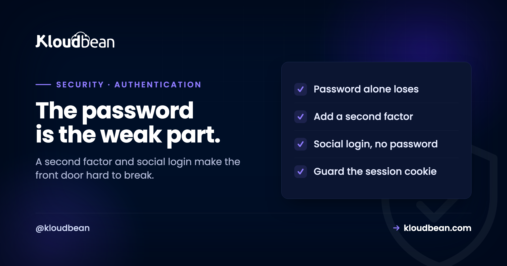

Two-Factor and Social Login: Making the Front Door Actually Strong

The login is the front door to everything: your hosting account, your dashboards, your customers' data. And for decades that door has had exactly one lock, the password, which turns out to be the flimsiest part of the whole system. People reuse passwords, phishing sites harvest them, and billions of real username-password pairs already sit in breach dumps that attackers replay against every login they can find. The fix is not a longer password. It is to stop depending on the password alone. Two levers do that: a second factor, and letting a stronger provider handle the sign-in. Neither is complicated, and together they turn the front door from the weakest link into one of the strongest.
Stop relying on the password by itself. Two-factor authentication (2FA) adds a second proof of identity, ideally a code from an authenticator app or a passkey rather than SMS, so a stolen password alone is useless. Social login lets a trusted provider like Google, GitHub, or LinkedIn handle the sign-in, which means no separate password to leak and, if that provider has 2FA enabled, your login inherits it. The third, quieter piece is the session: cookies should be HttpOnly so page scripts cannot steal them. On Kloudbean you can sign in with Google, GitHub, or LinkedIn, sessions use HttpOnly cookies, and enterprise engagements enforce MFA on console and VPN access. Your own app's login is yours to build to the same standard.
Why a password alone lost the fight
Understanding why passwords fail is what makes the rest of this feel urgent rather than optional.
Three forces broke the password. People reuse the same one across dozens of sites, so a single breach anywhere hands attackers a key that fits many locks. Phishing pages trick people into typing their real password into a fake login, and no amount of password complexity helps when you hand it over yourself. And huge dumps of real credentials from past breaches are traded freely, then replayed by bots against every login on the internet in what is called credential stuffing. The uncomfortable truth is that for a large share of accounts, the correct password is already known to someone who should not have it. A stronger password does not solve any of these, because the problem is not the password's strength, it is that a password is a single secret that can be stolen, guessed, or reused. You need a second thing.
Two-factor authentication: the second lock
Two-factor authentication asks for something beyond the password, so that knowing the password is no longer enough.
The classic framing is something you know (the password) plus something you have (your phone or a hardware key). After the password, the login asks for a second proof: a six-digit code from an authenticator app, a tap on a hardware security key, or a passkey. Because an attacker with your stolen password does not also have your phone or key, the login fails at the second step. This single measure defeats the entire credential-stuffing and breach-replay problem in one move, which is why it is the highest-value security upgrade most people can make.
Not all second factors are equal, and this is the part worth having an opinion about. SMS codes are far better than nothing, but they are the weakest common option, because attackers can hijack a phone number through SIM-swapping and receive the codes themselves. An authenticator app generating time-based codes (TOTP) is stronger and works offline, and a passkey or hardware security key is stronger still, resisting phishing outright. So the honest ranking is: passkey or hardware key first, authenticator app next, SMS only if it is the only choice. Use the strongest your accounts support, and reserve SMS for the logins that offer nothing better.
Social login: borrow a stronger door
Social login, or signing in with Google, GitHub, or LinkedIn, takes a different route to the same goal: it removes the separate password entirely.
With social login, you do not create yet another password for a site. Instead the site asks a provider you already trust to vouch for you, using the OAuth standard, and the provider confirms your identity without ever sharing your password with the site. The security wins are real. There is no new password for that site to leak in a future breach, there is one fewer credential for you to reuse or forget, and, importantly, if your Google or GitHub account has 2FA enabled, then every site you log into with it effectively inherits that second factor. It is often the easiest way to get strong authentication onto a login that has no 2FA of its own.
The honest tradeoffs, because there are some. You are now dependent on that provider: if you lose access to your Google account, you lose the sites you gated behind it, so the provider account itself must be well secured, which loops back to putting strong 2FA on it. There is a privacy dimension, since the provider sees which services you sign into. And it concentrates risk: that one account becomes a master key worth protecting fiercely. None of these outweigh the benefits for most people, but they are the reason "just use social login everywhere" deserves a moment's thought rather than a reflex.
The piece everyone forgets: the session cookie
You can nail the login and still lose the account at the next step, because authentication does not end when the password and second factor check out.
Once you are logged in, the server gives your browser a session cookie that proves you are authenticated for subsequent requests. If an attacker steals that cookie, they are you, no password or second factor required. The single most important protection here is marking session cookies HttpOnly, which means page JavaScript cannot read them. That matters because it neutralises the most common way cookies get stolen: a cross-site scripting (XSS) flaw that runs malicious script in your page and reads your cookies. Pair HttpOnly with the Secure flag (only send the cookie over HTTPS) and a sensible SameSite setting (limit cross-site sending, which helps against CSRF), and the session becomes far harder to hijack. Strong login plus a weak session cookie is a strong door with the key left under the mat, so treat the session as part of authentication, not an afterthought.
Where Kloudbean fits, honestly
Two of these levers are built into how you sign in to Kloudbean, and the third is how sessions are handled. You can log in with Google, GitHub, or LinkedIn, so you do not need a separate Kloudbean password and, if your provider account has 2FA on, your Kloudbean sign-in inherits it. Sessions use HttpOnly cookies, which is the hardening described above, aimed at keeping a session token out of reach of page scripts. On enterprise engagements, MFA is enforced on console and VPN access as part of the managed access controls.
The honest boundary: this is about securing your access to the platform. The authentication inside the application you build and host is yours to implement, and it should meet the same bar, a second factor, sane session cookies, and ideally social login or passkeys. The platform can host a rock-solid app with a weak login you wrote, and no host can fix that for you. For the account layer Kloudbean gives you strong options; for your app's own login, this article is the standard to build to. The wider map of who secures what is in the secure and compliant hosting guide.
Related reading
Authentication is who you are; for what each person is allowed to do once in, see the subusers and access-control guide. Keep the secrets behind your login safe with secrets management, harden the session further with the security headers guide, and restrict who can even reach an admin login with IP allowlisting. The overview is secure and compliant hosting.
Sign in strong, from the first click.
Log in to Kloudbean with Google, GitHub, or LinkedIn, with HttpOnly session cookies by default and MFA on console and VPN for enterprise engagements. A hardened account layer for the whole stack you run. Compare the platform in Kloudbean vs Cloudways, or start at kloudbean.com.
Social login (Google, GitHub, LinkedIn) · HttpOnly sessions · Enterprise MFA · One dashboard
FAQ
What is the difference between two-factor authentication and social login?
Two-factor authentication adds a second proof of identity on top of your password, such as an app code or a passkey, so a stolen password alone cannot get in. Social login removes the separate password entirely by letting a provider like Google or GitHub confirm your identity. They can work together: social login through a provider that has 2FA enabled gives you both, which is often the easiest way to get strong authentication onto a login.
Is SMS two-factor authentication safe?
It is much better than no second factor, but it is the weakest common option. Attackers can hijack a phone number through SIM-swapping and receive the codes, which defeats it. An authenticator app generating time-based codes is stronger and works offline, and a passkey or hardware security key is stronger still because it resists phishing. Use SMS only when a login offers nothing better, and prefer an app or passkey wherever you can.
Does social login mean the site gets my password?
No. That is the point of the OAuth standard behind social login: the provider confirms your identity to the site without ever sharing your password. The site never sees or stores a password for you at all, which means it has no password to leak in a future breach. You are trusting the provider to vouch for you, not handing your credential to every site you use.
What happens if I lose access to my Google or GitHub account?
You could lose access to every site you gated behind it, which is the main tradeoff of social login. That is why the provider account becomes critical infrastructure: secure it with strong 2FA, ideally a passkey or hardware key, and set up account recovery options. Concentrating your logins behind one provider is convenient and secure only if that one account is itself well protected.
Why do session cookies need to be HttpOnly?
Because a stolen session cookie lets an attacker impersonate you without any password or second factor. Marking the cookie HttpOnly stops page JavaScript from reading it, which neutralises the most common theft route, a cross-site scripting flaw that runs script in your page. Combined with the Secure flag and a sensible SameSite setting, HttpOnly cookies make a session much harder to hijack, protecting you after login as well as during it.
Can I add two-factor authentication to my own app?
Yes, and you should hold your app's login to the same standard described here. Most languages and frameworks have well-tested libraries for time-based one-time codes and increasingly for passkeys, and you can offer social login through the same OAuth providers. Add HttpOnly, Secure, SameSite session cookies, and your app's front door is as strong as the platform account layer it runs on.
How does Kloudbean handle login security?
You can sign in with Google, GitHub, or LinkedIn, so there is no separate Kloudbean password to leak, and if your provider account has 2FA your sign-in inherits it. Sessions use HttpOnly cookies to keep the token away from page scripts, and enterprise engagements enforce MFA on console and VPN access. That secures your access to the platform; the authentication inside the app you build remains your responsibility to implement well.
Is a passkey better than an authenticator app?
Generally yes. Passkeys are designed to resist phishing, because they are bound to the real site and cannot be handed to a fake one, whereas a code from an authenticator app can still be typed into a convincing phishing page. Authenticator apps remain a strong, widely supported choice and are far better than SMS. If a service supports passkeys, they are usually the strongest and most convenient option available.